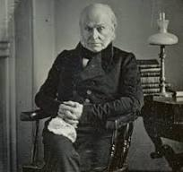

discover historical facts about texas!
learn the culture with us
Texas is the most populous state in the South Central region of the United States. Texas borders
Louisiana to the east, Arkansas to the northeast, Oklahoma to the north, New Mexico to the west, and
the Mexican states of Chihuahua, Coahuila, Nuevo León, and Tamaulipas to the south and southwest.

the first presiedent On April 30, 1789, George Washington, standing on the balcony of Federal Hall
on Wall Street in New York, took his oath of office as the first President of the United States.

the teaxes state is popalar beacause Texas is known for its legendary cowboy culture, its large
cities, its diverse landscapes, its delicious Tex-Mex cuisine, and its strong southern hospitality.